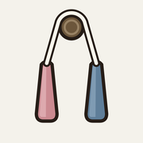

TwinwickTwinwick Support
Candles in a heap, seven brass holders, three alike burn away.
Contact
Write to lamnv260398@gmail.com. Please say which device you play on and, if it is about a level, its chapter and number (for example Still Warm · 81).
How to play
- Tap any candle you can see in the heap, even one that is partly covered. It stands up in one of the seven brass holders on the wall rail.
- Three alike burn away and free their holders.
- Tied candles travel together: tapping one lifts every candle on its wick, buried ones included. If they will not fit, the wick goes taut and nothing happens, so count the free holders first.
- Warm wax waits: a candle marked with a number lifts only after that many triples have burned in the level.
- Clear the cloth to shelve the batch. Seven full holders and no three alike ends it, and you can play it again for free.
- Flames: 3 if you never use more than five holders at once, 2 for six, 1 for seven or more.
The same rules are on the How to play card in Settings.
Questions
What do Trim, Put Back and Spare Holder do?
Trim cuts the wick of a tied group, so its candles go up one at a time. Put Back returns your last move: the candle or group goes back to the exact place it came from (it cannot undo a triple that already burned). Spare Holder adds an eighth holder until the end of the level, once per level; you can also use it on the "No holders left" card to keep playing. The tools appear at levels 6, 12 and 18, each with two free uses.
How do I get more tools?
Tools cost wax: Trim 60, Put Back 40, Spare Holder 90. You earn wax the first time you win a level, the first time you earn three flames on it, and when you finish a chapter. If you run out of a tool, tap it to buy one with wax.
What are wax packs?
Optional in-app purchases that add wax to your balance: Handful of Wax, Wax Block and Chandler's Stock. All 120 levels are free without them. Payment is handled by Apple's App Store.
How do I restore purchases?
Open Settings → Restore purchases. Wax packs are used up as you spend them, so there is nothing to restore; the button is there for the App Store. If a purchase went through but the wax did not arrive, reopen the app with a network connection so the App Store can finish it, then contact us if it is still missing.
How do I turn the sound off?
Open Settings (the gear button) and switch Sound off. The choice is remembered.
Are there timers, lives or ads?
No. A lost level costs nothing; play it again as often as you like.
Progress
Progress, wax, tools and settings are saved on the device only. They are not synced between devices, and deleting the app deletes them.